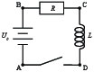

(Denne oppgaven er ganske lik forrige ukes oppgave. Hvis du gjorde den, kan du gå videre til neste oppgave)
Figuren viser en krets som består av et batteri, en motstand og en spole.

Ved tiden \( t=0 \) lukker vi igjen bryteren slik at det kan gå en strøm i kretsen.
a) Hva er strømmen ved \( t=0 \)?
\( I(0) = 0 \)
b) Hva blir Kirchoffs spenningslov for denne kretsen?
c) Hva blir strømmen etter svært lang tid?
d) Anta at etter svært lang tid, slutter plutselig batteriet å virke slik at det ikke lenger gir noen spenningsøkning \( U_0 \), men at det fremdeles kan gå en strøm gjennom det uten nevneverdig motstand. Hva vil skje i kretsen?
e) La oss nå anta at batteriet slutter å virke ved \( t=0 \). Hva blir strømmen som funksjon av tid for \( t>0 \)?
Her er nå Kirchoffs spenningslov $$-IR - L\frac{\d I}{\d t} = 0$$ som gir $$\frac{\d I}{\d t} = - I\frac{R}{L} = - \frac{I}{\tau}$$ hvor \( \tau = L/R \). Ved \( t=0 \) er \( I=U_0/R \) slik at $$I(t) = \frac{U_0}{R}e^{-t/\tau}$$ hvor \( \tau = L/R \).